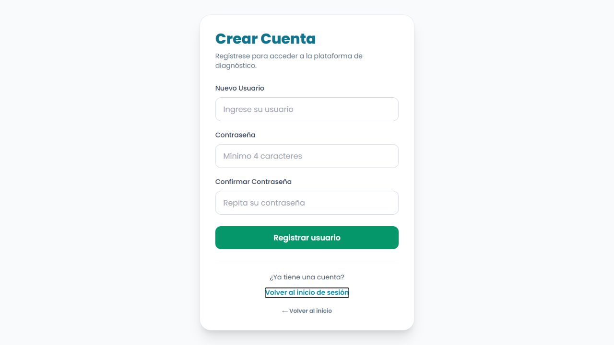
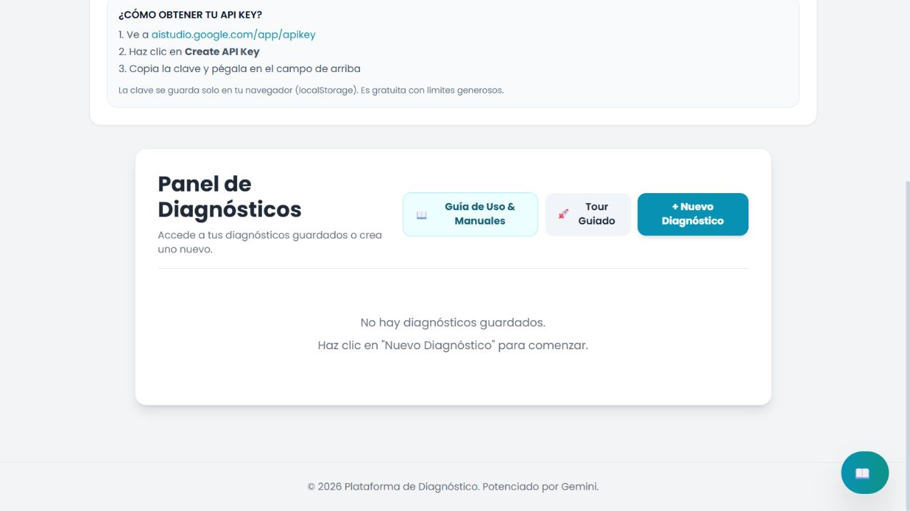
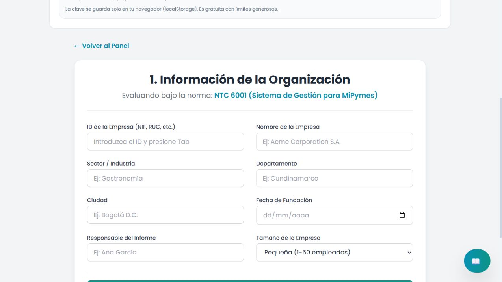
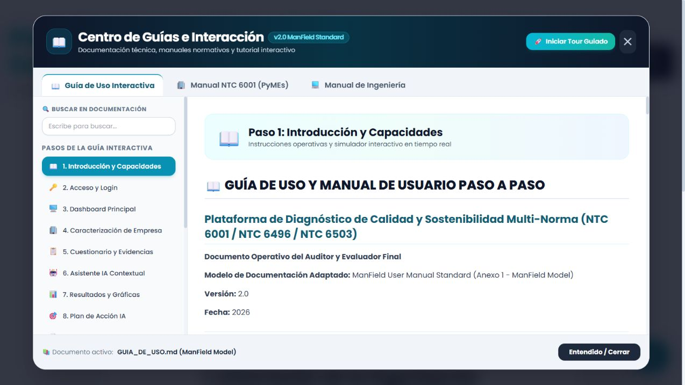

1. Objetivo y preparación
La plataforma permite valorar el sistema de gestión de una empresa frente a la NTC 6001 y convertir los hallazgos en una ruta de fortalecimiento organizacional.
DirecciónPlaneación, liderazgo, seguimiento y toma de decisiones.
OperaciónGestión comercial, procesos, entrega del producto o servicio y control operacional.
ApoyoTalento humano, recursos, información y gestión financiera.
Antes de comenzar
- Use un navegador actualizado y una conexión estable.
- Tenga disponibles NIT o identificación, ubicación, sector, tamaño y responsable del informe.
- Reúna procedimientos, registros comerciales, perfiles de cargo, controles financieros, indicadores y evidencias operativas.
- La clave Gemini es opcional; habilita ayuda contextual y generación asistida del plan de acción.
1Ingresar
2Caracterizar
3Evaluar
4Mejorar
2. Acceso y registro
- Seleccione Ingresar o Comenzar Autoevaluación en la portada.
- Escriba el usuario y la contraseña registrados.
- Seleccione Iniciar sesión.
- Si aún no tiene cuenta, abra Crear una cuenta (Registrarse), defina sus credenciales y confirme.
Protección de acceso: no comparta su contraseña ni la incluya en informes, capturas o repositorios. El acceso se valida mediante el backend.


3. Panel principal
Después de autenticarse encontrará los diagnósticos del usuario y los siguientes accesos:
- + Nuevo Diagnóstico: abre directamente la caracterización NTC 6001.
- Guía de Uso & Manuales: abre la ayuda integrada y el manual normativo.
- Tour Guiado: explica los controles principales dentro de la aplicación.
- Clave Gemini: habilita asistencia y generación del plan con IA; es opcional.

4. Crear un nuevo diagnóstico
Esta versión trabaja únicamente con NTC 6001; por eso no presenta un selector de normas.
- Seleccione + Nuevo Diagnóstico.
- Ingrese el ID o NIT de la empresa. Si ya existe, la plataforma puede recuperar sus datos.
- Complete nombre, sector, departamento, ciudad y fecha de fundación.
- Registre el responsable del informe y el tamaño de la empresa.
- Revise la información y seleccione Continuar al Cuestionario.
Identificación consistente: use siempre el mismo ID o NIT para que el historial y las comparaciones correspondan a la misma organización.

5. Diligenciar el cuestionario
La evaluación está organizada por cláusulas de la NTC 6001. En cada requisito seleccione el estado real, confirme evidencias y añada observaciones útiles para el plan de mejora.
| Estado | Uso recomendado |
|---|---|
| Cumple | El requisito está implementado y se puede demostrar. |
| Parcialmente | Hay avances, pero faltan controles, formalización o registros. |
| No cumple | No existe implementación o soporte verificable. |
| No aplica | El requisito no corresponde al contexto; documente la justificación. |
Cómo responder con calidad
- Consulte a los responsables de dirección, operación, comercial, talento humano y finanzas.
- Marque solo documentos y registros que hayan sido comprobados.
- Use los comentarios para explicar brechas, responsables y próximos pasos.
- Puede abrir el chat contextual de una cláusula para solicitar ejemplos; valide siempre la respuesta de la IA.
6. Resultados, plan de acción e informe
- Cuando termine la evaluación, seleccione Finalizar Diagnóstico.
- Revise el porcentaje global, el gráfico y el resultado de cada cláusula.
- Identifique primero los requisitos en No cumple y Parcialmente.
- Si configuró Gemini, genere el plan de acción y revise prioridades, recursos y plazos sugeridos.
- Guarde el diagnóstico y descargue el informe PDF.
- En futuras evaluaciones, use el historial para comprobar la evolución de la empresa.
Uso responsable: el autodiagnóstico orienta decisiones internas, pero no equivale por sí solo a una auditoría de certificación.
7. Ayuda, solución de problemas y seguridad

| Situación | Qué hacer |
|---|---|
| No puede iniciar sesión | Verifique usuario, contraseña, conexión y disponibilidad del backend. No use credenciales de ejemplo. |
| La IA no responde | Confirme que la clave Gemini sea válida y que exista conexión a internet. |
| No aparecen diagnósticos | Compruebe que inició sesión con el usuario correcto y que el backend responde. |
| El PDF no se descarga | Permita descargas y ventanas emergentes para el sitio. |
Lista de verificación antes de cerrar
- Identificación de empresa correcta.
- Datos de caracterización completos.
- Todas las cláusulas respondidas.
- Evidencias verificadas.
- Comentarios registrados.
- Resultados revisados.
- Plan de acción validado.
- Diagnóstico guardado o exportado.